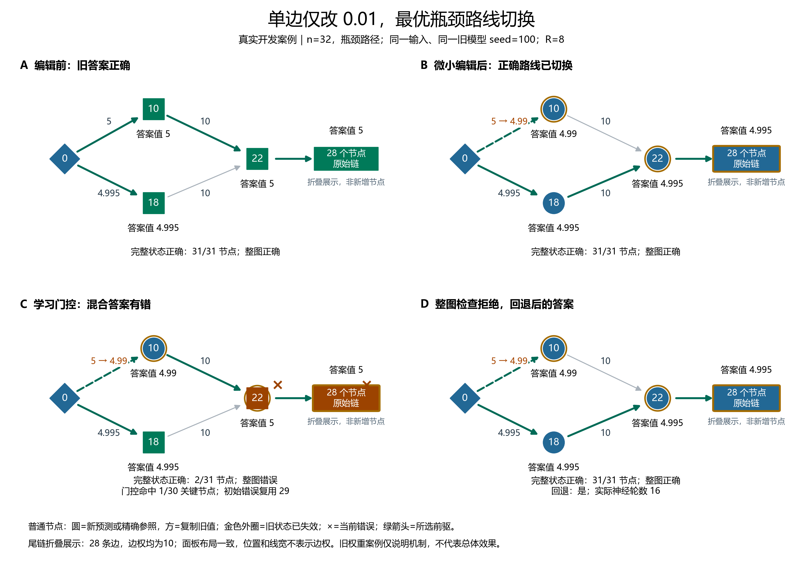
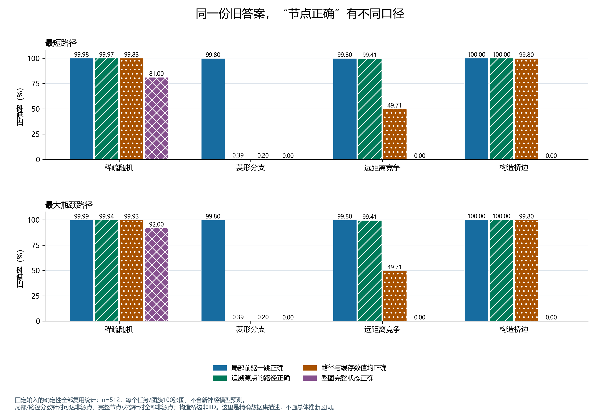
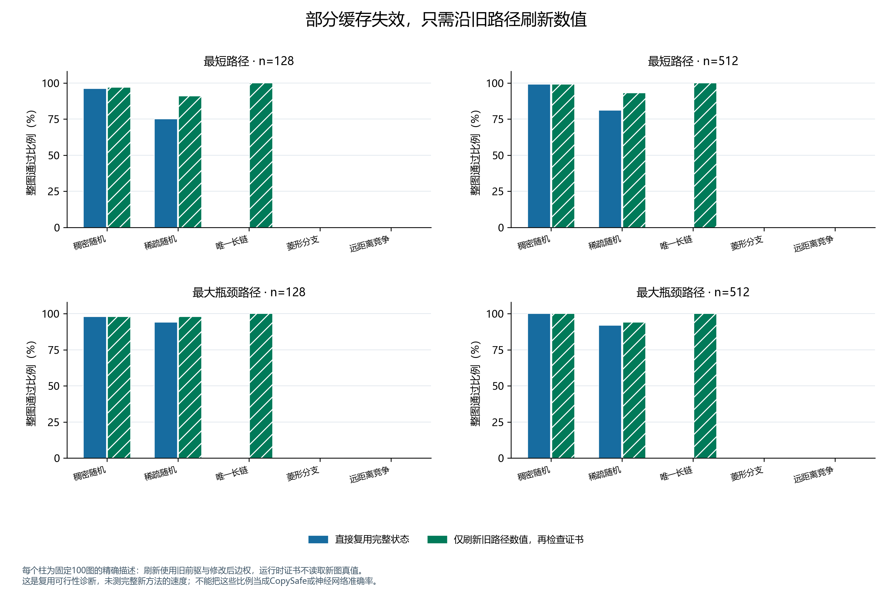
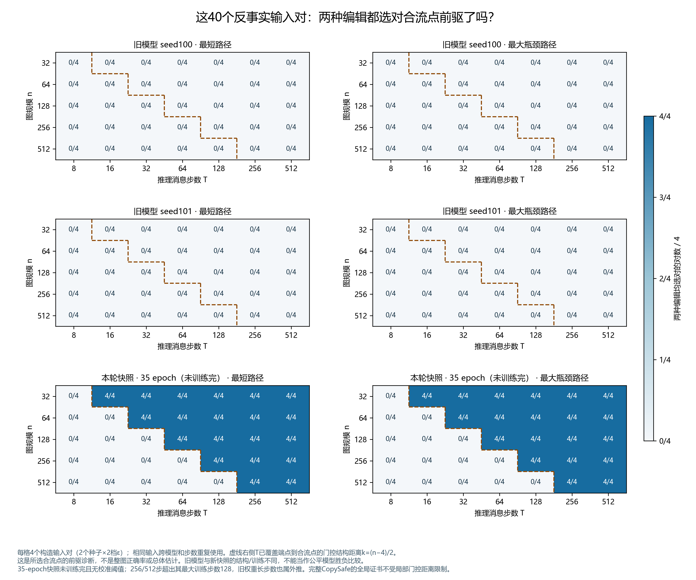
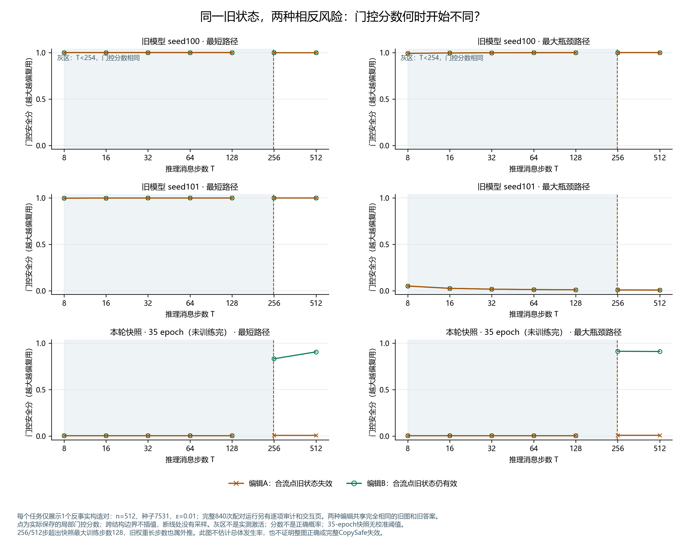
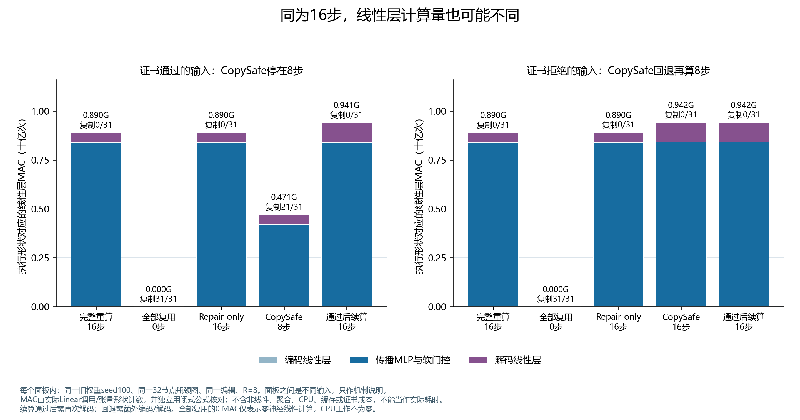
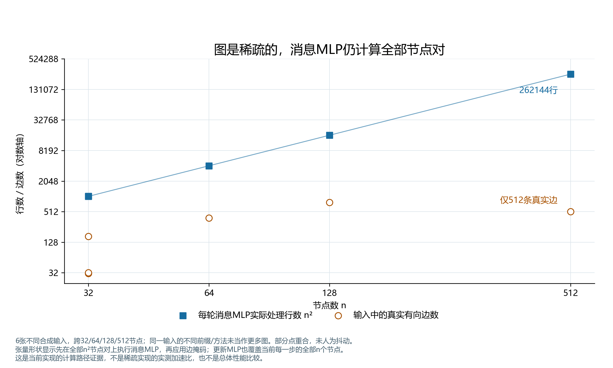
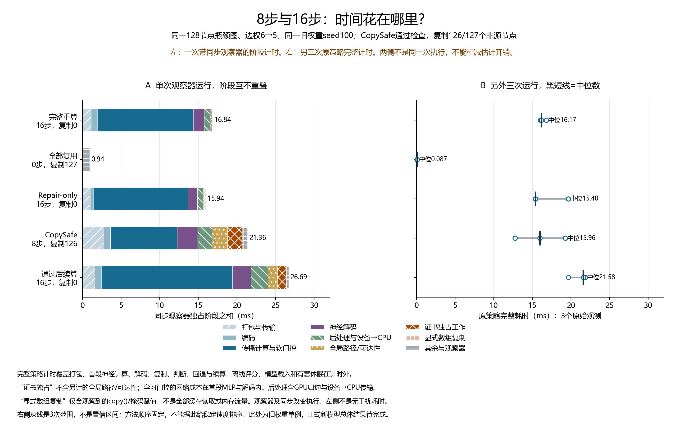
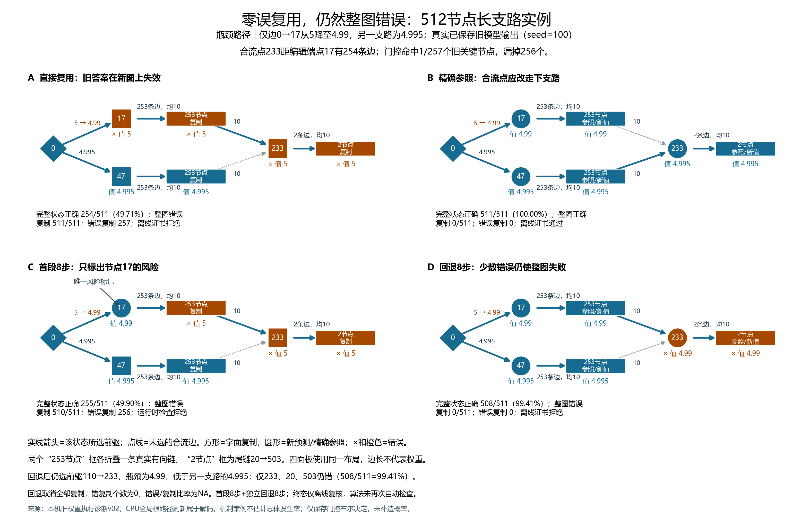

5 → 4.99
一条边，改变最优瓶颈路径
旧路线为 0→10→22，新路线切换为 0→18→22。这里的变化量只有 0.01。
查看旧、新路径 →观察少数关键节点如何影响整图结果，并区分学习门控、整图检查和回退重算各自起了什么作用。
开发案例、输入剖析与局部机制 · 正式实验进行中逐节点案例使用旧模型，输入剖析只描述固定图；反事实页面另展示未训练完的35-epoch快照。它们解释机制，不代表新模型的总体效果。正式对照表、置信区间和最终报告会在完整评测后更新。此页为发布快照，非实时训练监控。
旧路线为 0→10→22，新路线切换为 0→18→22。这里的变化量只有 0.01。
查看旧、新路径 →128 节点的实例中，3 个非源点的旧完整状态失效。全部复用时，节点正确率较高，整图仍然错误。
定位少量关键错误 →微扰换路的实例中，学习门控漏掉这些关键节点。整图检查拒绝了混合答案，回退后才恢复正确。
追踪漏检、检查与回退 →展示关键节点、风险判断、复用覆盖和最终答案。单个成功实例不表示总体识别率为 100%。
查看风险判断 →回退网络的新预测也会出错。最终错误复用为零，不能证明整图解正确。
查看回退后的失败 →先前正确的答案继续计算 8 轮后变错。增加计算可能改善答案，也可能破坏已经正确的输出。
对比停止与续算 →交互页包含 7 个观察角度，来自 5 个独立输入；同一输入的多个观察角度不增加样本数。可切换方法、选中节点、查看安全分、复制标记和路径。

R 是第一阶段的消息传播轮数；主实验 R=8 时，总轮数上限为 16。长轮数实验会同时报告实际轮数、网络调用次数和完整耗时。
| 方法 | 做什么 | 神经计算轮数 |
|---|---|---|
| 完整重算 | 从修改后的图开始，由重算网络重新求解。 | R+8 |
| 全部复用 | 直接使用旧前驱和旧数值。 | 0 |
| Repair-only | 修复网络参考旧答案和修改信息，产生新答案。 | R+8 |
| CopySafe | 先算 R 轮，门控混合旧、新输出；整图检查通过则停止，否则独立重算 8 轮。 | 通过 R；拒绝 R+8 |
| 检查通过后续算 | 检查通过也不停，从同一隐藏状态继续 8 轮；检查拒绝则走独立重算 8 轮。 | R+8 |
128节点瓶颈图中，3个旧路径关键节点一起失效。门控只标出33，实际输出也只更换33的前驱；11和16沿用旧记录，联合答案仍然正确且没有回退。
因此，门控覆盖1/3与最终错误复用0不矛盾。一个指标看修复前的旧路径，另一个看修复后的联合输出。
切换节点、追踪整条路径与离线回滚 →交互页保留实际分数和复制掩码，只把保存输出中33的前驱回滚。11和16的复制记录随之失效。这是同一输入上的离线干预，不是新模型、新推理或独立样本。
本例边权6→5，不是0.01微扰例。网络仍先计算全部128节点8步，只在输出时选择来源。
下载静态路径对照 PDF以下是固定输入与“全部复用”的精确统计，不含新模型预测。共检查 5,200 张测试图；每个任务、图族、规模对应 100 张图。构造图的比例不代表自然图中的发生率。
同一份旧答案，用不同口径评分，结果可能相差很大。例如 512 节点远距离竞争图：路径节点正确率约 99.41%，完整状态正确率约 49.71%，整图正确率为 0。

全部复用，固定输入的精确描述；每行 100 张图，不含模型种子重复运行。
| 任务 | 节点数 | 图族 | 局部一跳 | 完整路径 | 完整节点状态 | 整图 |
|---|---|---|---|---|---|---|
| 最大瓶颈路径 | 32 | 唯一长链 | 100.00 | 100.00 | 3.23 | 0.00 |
| 最大瓶颈路径 | 32 | 稠密随机 | 99.87 | 99.19 | 99.10 | 93.00 |
| 最大瓶颈路径 | 32 | 菱形分支 | 96.77 | 6.45 | 3.23 | 0.00 |
| 最大瓶颈路径 | 32 | 远距离竞争 | 96.77 | 90.32 | 45.16 | 0.00 |
| 最大瓶颈路径 | 32 | 稀疏随机 | 99.90 | 99.55 | 99.13 | 91.00 |
| 最大瓶颈路径 | 64 | 唯一长链 | 100.00 | 100.00 | 1.59 | 0.00 |
| 最大瓶颈路径 | 64 | 稠密随机 | 99.94 | 99.92 | 99.92 | 96.00 |
| 最大瓶颈路径 | 64 | 菱形分支 | 98.41 | 3.17 | 1.59 | 0.00 |
| 最大瓶颈路径 | 64 | 远距离竞争 | 98.41 | 95.24 | 47.62 | 0.00 |
| 最大瓶颈路径 | 64 | 稀疏随机 | 99.90 | 99.29 | 99.13 | 90.00 |
| 最大瓶颈路径 | 128 | 唯一长链 | 100.00 | 100.00 | 0.79 | 0.00 |
| 最大瓶颈路径 | 128 | 稠密随机 | 99.98 | 99.97 | 99.97 | 98.00 |
| 最大瓶颈路径 | 128 | 菱形分支 | 99.21 | 1.57 | 0.79 | 0.00 |
| 最大瓶颈路径 | 128 | 远距离竞争 | 99.21 | 97.64 | 48.82 | 0.00 |
| 最大瓶颈路径 | 128 | 稀疏随机 | 99.98 | 99.98 | 99.94 | 94.00 |
| 最大瓶颈路径 | 256 | 唯一长链 | 100.00 | 100.00 | 0.39 | 0.00 |
| 最大瓶颈路径 | 256 | 稠密随机 | 100.00 | 100.00 | 100.00 | 100.00 |
| 最大瓶颈路径 | 256 | 菱形分支 | 99.61 | 0.78 | 0.39 | 0.00 |
| 最大瓶颈路径 | 256 | 远距离竞争 | 99.61 | 98.82 | 49.41 | 0.00 |
| 最大瓶颈路径 | 256 | 稀疏随机 | 99.98 | 99.90 | 99.78 | 93.00 |
| 最大瓶颈路径 | 512 | 构造桥边 | 100.00 | 100.00 | 99.80 | 0.00 |
| 最大瓶颈路径 | 512 | 唯一长链 | 100.00 | 100.00 | 0.20 | 0.00 |
| 最大瓶颈路径 | 512 | 稠密随机 | 100.00 | 100.00 | 100.00 | 100.00 |
| 最大瓶颈路径 | 512 | 菱形分支 | 99.80 | 0.39 | 0.20 | 0.00 |
| 最大瓶颈路径 | 512 | 远距离竞争 | 99.80 | 99.41 | 49.71 | 0.00 |
| 最大瓶颈路径 | 512 | 稀疏随机 | 99.99 | 99.94 | 99.93 | 92.00 |
| 最短路径 | 32 | 唯一长链 | 100.00 | 100.00 | 3.23 | 0.00 |
| 最短路径 | 32 | 稠密随机 | 99.90 | 99.87 | 99.58 | 94.00 |
| 最短路径 | 32 | 菱形分支 | 96.77 | 6.45 | 3.23 | 0.00 |
| 最短路径 | 32 | 远距离竞争 | 96.77 | 90.32 | 45.16 | 0.00 |
| 最短路径 | 32 | 稀疏随机 | 99.77 | 99.65 | 98.52 | 81.00 |
| 最短路径 | 64 | 唯一长链 | 100.00 | 100.00 | 1.59 | 0.00 |
| 最短路径 | 64 | 稠密随机 | 99.87 | 99.78 | 99.63 | 94.00 |
| 最短路径 | 64 | 菱形分支 | 98.41 | 3.17 | 1.59 | 0.00 |
| 最短路径 | 64 | 远距离竞争 | 98.41 | 95.24 | 47.62 | 0.00 |
| 最短路径 | 64 | 稀疏随机 | 99.84 | 99.56 | 98.89 | 83.00 |
| 最短路径 | 128 | 唯一长链 | 100.00 | 100.00 | 0.79 | 0.00 |
| 最短路径 | 128 | 稠密随机 | 99.98 | 99.96 | 99.92 | 96.00 |
| 最短路径 | 128 | 菱形分支 | 99.21 | 1.57 | 0.79 | 0.00 |
| 最短路径 | 128 | 远距离竞争 | 99.21 | 97.64 | 48.82 | 0.00 |
| 最短路径 | 128 | 稀疏随机 | 99.89 | 99.83 | 99.03 | 75.00 |
| 最短路径 | 256 | 唯一长链 | 100.00 | 100.00 | 0.39 | 0.00 |
| 最短路径 | 256 | 稠密随机 | 100.00 | 100.00 | 99.99 | 98.00 |
| 最短路径 | 256 | 菱形分支 | 99.61 | 0.78 | 0.39 | 0.00 |
| 最短路径 | 256 | 远距离竞争 | 99.61 | 98.82 | 49.41 | 0.00 |
| 最短路径 | 256 | 稀疏随机 | 99.97 | 99.89 | 99.75 | 85.00 |
| 最短路径 | 512 | 构造桥边 | 100.00 | 100.00 | 99.80 | 0.00 |
| 最短路径 | 512 | 唯一长链 | 100.00 | 100.00 | 0.20 | 0.00 |
| 最短路径 | 512 | 稠密随机 | 99.93 | 99.92 | 99.89 | 99.00 |
| 最短路径 | 512 | 菱形分支 | 99.80 | 0.39 | 0.20 | 0.00 |
| 最短路径 | 512 | 远距离竞争 | 99.80 | 99.41 | 49.71 | 0.00 |
| 最短路径 | 512 | 稀疏随机 | 99.98 | 99.97 | 99.83 | 81.00 |
唯一长链与构造桥边中，旧路径本身仍然有效。沿旧前驱、用新边权刷新数值，再运行不读取真值的整图证书，就可以通过这些实例。它们能测试数值缓存过期，不能单独证明模型识别了路径换路风险。

两种输入使用完全相同的旧图和旧答案，只改不同的远端边。一种改动会切换合流点的最优路线，另一种不会。这样可以检查模型是否感知了修改，而不是碰巧偏好某一条路。
512 节点、ε=0.01 的这对输入中，训练到第 35 个 epoch 的快照在 128 步时给出相同安全分；到 256 步时，两种输入的安全分和前驱选择都能区分。页面可切换任务、旧模型、图规模、构造种子、扰动强度和步数。
40 个不同反事实输入对 × 3 个模型版本 × 7 组步数 = 840 次配对运行。这里只记录合流点，不能据此声称整图正确；35-epoch 快照未训练完且没有在本诊断中校准阈值。局部门控的传播限制也不等于全局证书或完整 CopySafe 的限制。
快照训练最多128步、128节点；旧模型最多16步、32节点。256/512步以及更大图属于相应训练范围外的诊断，页面会随所选设置显示提示。


当前门控没有跳过首段的节点计算。CopySafe 先完成与 Repair 前缀相同的线性层计算，再选择哪些输出沿用旧答案。接受时主要省下后续8步；拒绝时还要付出额外编码、解码和回退成本。
在6张不同输入、7个图/前缀条件、11种策略的77条诊断中，观察器前后输出的类型和字节相同，保存的前驱与数值又经过独立路径复核。每轮更新MLP覆盖全部节点，消息MLP覆盖全部 n² 节点对，包括之后会被边掩码排除的部分。


诊断使用旧的完整权重和既有阈值，不是本轮新模型正式成绩。分阶段观察加入了同步和计时开销，因此不把它画成正式速度对比；完整正式计时和配对统计仍待评测完成。
学习门控的分数在首段网络计算之后才产生。因此，后续“检查耗时”很短，也不等于判断风险的全部成本很低。完整耗时还要覆盖打包、传输、首段计算、解码、缓存操作和可能的回退。
下图左侧拆开一次带同步观察器的运行，阶段互不重叠；右侧保留另三次原策略完整耗时。它们是不同执行，不能相减当作观察器开销，也不能据此给稳定速度排名。

边0→17仅从5改为4.99，另一条长支路瓶颈为4.995。合流点距编辑端点254条边；门控只标出1/257个旧关键节点，混合答案被检查拒绝。
回退后508/511个非源节点正确，合流点233及下游20、503仍错。全部复制被取消，错误复制个数为0，“错误/复制数”比率为NA。
切换四阶段，展开255条边路径 →同一份已保存旧权重输出，不是正式新模型结果；机制选例，不估计总体发生率。终态证书仅离线核验，算法未再次自动检查。

旧模型阈值按 8 轮校准。长轮数结果仅作诊断，不能替代匹配训练的新模型实验。
正式模型采用共同的逐步 LayerNorm 稳定化版本；与原始模型的区别将在报告中披露。